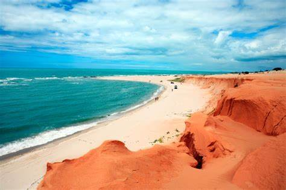

Praias
A praia foi cenário das primeiras gravações de Malhação 2009, produzida e exibida pela Globo.
À noite, moradores e turistas se encontram na rua principal jocosamente apelidada de "Broadway", embalados pelo ritmo do "Reggae" e do Forró.
Onde já se viu, praia ter logotipo? Canoa Quebrada tem. O símbolo da lua e da estrela, que hoje está tatuado em vários pontos da falésia, é a marca registrada de Canoa desde a sua descoberta pelos hippies, nos anos 70. Naquele tempo, Canoa era um lugar mais difícil de chegar do que hoje é Jeri. Jericoacoara, por sua vez, nem estava no mapa.
Entre julho e dezembro é difícil você perder um dia de praia no Ceará. À beira-mar, porém, o calor é sempre amainado pela brisa. O segundo semestre em particular é a estação dos ventos, quando as praias do Ceará são tomadas por wind e kitesurfistas. Agosto costuma ser particularmente animado em Canoa, devido à chegada de europeus em férias. De janeiro a junho você pode pegar chuva no Ceará. Os meses mais chuvosos costumam ser entre março e maio, mas o momento de invernar — e a duração do inverno são imprevisíveis. Pode inclusive nem chover (o Ceará vem passando por anos seguidos de seca intensa). E como é essa chuva? Chuvisquenta e intermitente? Torrencial e passageira? Só diurna? Só noturna? Dá para ser de todo jeito. Não dá para prever. Mas mesmo se chover, saiba que o único jeito de passar frio no litoral do Ceará é ligando o ar condicionado no máximo. A temperatura mínima ao longo do ano dificilmente cai abaixo dos 22ºC.
A praia foi cenário das primeiras gravações de Malhação 2009, produzida e exibida pela Globo.
À noite, moradores e turistas se encontram na rua principal jocosamente apelidada de "Broadway", embalados pelo ritmo do "Reggae" e do Forró.
(O turboélice da foto é o que fazia a rota triangular Recife-Canoa Quebrada-Maceió, que operou entre janeiro de 2019 até o início da pandemia. Na retomada dos voos, a rota foi reformulada e ganhou nova origem — Campinas — e jatos Embraer.) O aeroporto de Aracati (código: ARX) está a 20 km de Canoa Quebrada e a 23 km do Pontal do Maceió, em Fortim — 30 minutos de percurso, em ambos os casos. Um táxi do aeroporto a Canoa Quebrada sai R$ 50. A Fortim, R$ 80. Um trânsfer combinado com a sua pousada, com direito ao motorista esperando você com uma placa no desembarque, deve ter preços semelhantes. Ainda não há locadoras de carros no aeroporto.